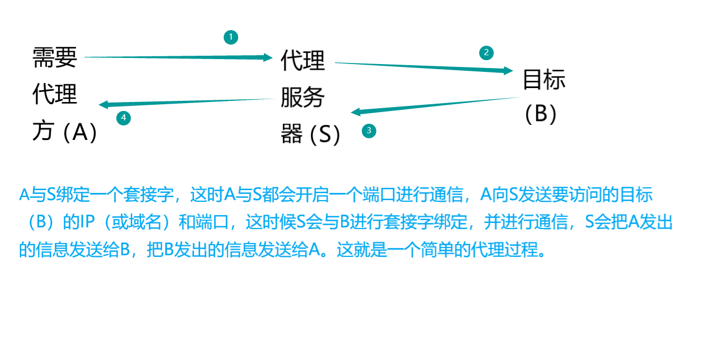
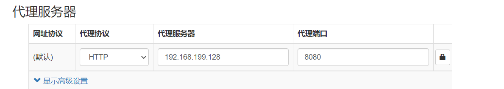
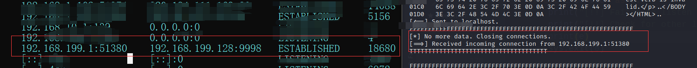
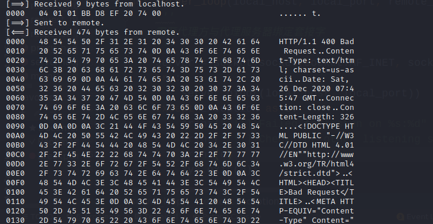

# 前言
总算有时间了，赶紧学一会。
# 为什么要创建一个 TCP 代理
书中原话：
有很多理由让你的工具箱里，保留一个 TCP 代理，它不仅可以将流量从一个主机转发给另一个主机，而且可以评估基于网络的软件。在企业级环境下进行渗透测试时，你会经常遇到无法使用 Wireshark 的情况，无法在 windows 系统上加载驱动嗅探本地网络流量，分段的网络也阻止使用工具直接嗅探目标主机。我经常在实际案例中部署简单的 TCP 代理以了解未知的协议，修改发送到应用的数据包，或者为模糊测试创建一个测试环境。
# 原理
首先要搞清楚原理，网上搜索的时候看到了一篇介绍：《简单聊聊网络代理原理》https://zhuanlan.zhihu.com/p/56271931
Python 实现 TCP 代理的原理
- 【需要代理方】向代理服务器发出请求信息。
- 【代理服务器】应答。
- 【需要代理方】接到应答后发送向【代理服务器】发送【目的】ip 和端口。
- 【代理服务器】与目的连接。
- 【代理服务器】将【需要代理方】发出的信息传到【目的方】，将目的方发出的信息传到【需要代理方】。
- 代理完成。
画了个图：

# 基于 Python3 实现的 TCP 代理
书上是 2.x 版本的，想要改成 3.x 版本的。网上一搜，前辈们已经在几年前就替我们实现了。把代码改变了一下
我已经把所有代码都写上了注释。
解释一下【receive_first】参数：
这个参数如果是 True，程序会先接受远程目标主机发送的数据，因为有些服务进程可能会做这样的事情，例如 ftp 服务器一般会首先发送旗标。
# 代码
#说明：这里涉及到三方：本地主机、远程主机和服务器。 | |
#该段代码是运行在 Linux 服务器上的，为本地主机提供代理以便与远程主机通信。 | |
#!/usr/bin/python | |
# -*- coding:utf-8 -*- | |
import sys | |
import socket | |
import threading | |
import logging | |
import ctypes | |
logging.basicConfig(level=logging.DEBUG, | |
# 格式化输出 | |
format='%(asctime)s - %(levelname)s : %(message)s', | |
# 日志信息输出到文件中 | |
#filename="./TCP_proxy.log", filemode="a" | |
) | |
''' | |
logging 为调试部分。不想显示调试信息可以把logging.basicConfig的level改成更高的等级，或者注释logging语句。 | |
''' | |
def hex_dump(src, length=16): | |
''' | |
显示数据包的十六进制，并显示对应的ASCII码。 | |
''' | |
result = [] | |
digits = 4 if isinstance(src, str) else 2 | |
for i in range(0, len(src), length): | |
s = src[i:i + length] | |
hexa = ' '.join(["%0*X" % (digits, (x)) for x in s]) | |
logging.debug("\t\thexa:%s" % hexa) | |
logging.debug("".join(str(type(x)) for x in s)) | |
text = ''.join([chr(x) if 0x20 <= x < 0x7F else '.' for x in s]) | |
logging.debug("\t\ttext:%s" % text) | |
result.append("%04X %-*s %s" % (i, length * (digits + 1), hexa, text)) | |
print('\n'.join(result)) | |
def receive_from(connection): | |
''' | |
接收本地或远程主机的数据 | |
''' | |
buffer = b"" | |
# 接收数据需要在 2s 内处理完成，否者抛出超时异常。 这个时间有些短，后续测试的时候输入 FTP 账号、密码的时间有些紧。。。 | |
# 可调长一些，但其实应该用更科学的办法来处理。。。 还是那句话，后面的路还很远，先略过。。。 | |
connection.settimeout(2) | |
try: | |
# 一直读入缓冲区，直到没有更多的数据 | |
# 我们给它设置超时报错 | |
while True: | |
data = connection.recv(4096) | |
if not data: | |
# 显示函数没有接收到数据 | |
logging.info("def receive_from no data return") | |
break | |
logging.info("receive data:%s\n" % data) | |
buffer += data | |
except Exception as e: | |
# 显示该函数的报错信息 | |
logging.info('def receive_from error:%s' % e) | |
return buffer | |
def request_handler(buffer): | |
''' | |
可以在该函数中修改传送到目标主机的数据（请求数据）。 | |
功能未完待续 | |
执行包修改 | |
''' | |
return buffer | |
def response_handler(buffer): | |
""" | |
可以在该函数中修改目标主机返回到本地主机的数据（响应数据） | |
功能未完待续 | |
执行包修改 | |
""" | |
return buffer | |
def proxy_handler(client_socket, remote_host, remote_port, receive_first): | |
''' | |
在线程中处理代理任务 | |
代理服务器与目标绑定套接字 | |
''' | |
# 打印该线程 ID，语句只能在 Linux 下执行 | |
threading_id = ctypes.CDLL('libc.so.6').syscall(186) | |
# 请求与目标主机的连接。 | |
remote_socket = socket.socket(socket.AF_INET, socket.SOCK_STREAM) | |
remote_socket.connect((remote_host, remote_port)) | |
# 如有必要先从目标接受数据，如 FTP 服务器会先发送旗标等等 | |
if receive_first: | |
# 接收远程主机的数据 | |
remote_buffer = receive_from(remote_socket) | |
# 在日志中打印出原始数据 | |
logging.info("threading id: %s remote_buffer:%s\n" % threading_id, remote_buffer) | |
# 调用十六进制转储函数 | |
hex_dump(remote_buffer) | |
# 将它发送到我们的响应处理器 | |
# 响应函数什么都没写，数据还是原样返回 | |
remote_buffer = response_handler(remote_buffer) | |
# 如果从目标接受到了数据，就发送到我们的本地客户端 | |
if len(remote_buffer): | |
print("[<==] Sending %d bytes to localhost." % len(remote_buffer)) | |
client_socket.send(remote_buffer) | |
# 现在我们循环读取数据，发送给远程主机和本地客户端 | |
while True: | |
# 接收本地主机的数据 | |
local_buffer = receive_from(client_socket) | |
# 如果有数据就打印 | |
if len(local_buffer): | |
print("[==>] Received %d bytes from localhost." % len(local_buffer)) | |
hex_dump(local_buffer) | |
# 将它发送到我们的请求处理程序 | |
# 请求处理函数什么都没写，数据还是原样返回 | |
local_buffer = request_handler(local_buffer) | |
# 将数据发送到目标主机 | |
remote_socket.send(local_buffer) | |
print("[==>] Sent to remote.") | |
# 接收远程主机的数据 | |
remote_buffer = receive_from(remote_socket) | |
# 如果有数据就打印 | |
if len(remote_buffer): | |
print("[<==] Received %d bytes from remote." % len(remote_buffer)) | |
hex_dump(remote_buffer) | |
# 发送到我们的响应处理器 | |
remote_buffer = response_handler(remote_buffer) | |
# 将响应发送到本地套接字 | |
client_socket.send(remote_buffer) | |
print("[<==] Sent to localhost.") | |
# 如果两边没有更多的数据，则关闭连接 | |
if not len(local_buffer) or not len(remote_buffer): | |
client_socket.close() | |
remote_socket.close() | |
print("[*] No more data. Closing connections.") | |
break | |
def server_loop(local_host, local_port, remote_host, remote_port, receive_first): | |
''' | |
【需要代理方】与【代理服务器】绑定套接字 | |
''' | |
# 创建一个套接字对象 | |
server = socket.socket(socket.AF_INET, socket.SOCK_STREAM) | |
try: | |
# 绑定服务地址 | |
server.bind((local_host, local_port)) | |
except Exception as e: | |
print(e) | |
print("[!!] Failed to listen on %s:%d" % (local_host, local_port)) | |
print("[!!] Check for other listening sockets or correct permissions.") | |
sys.exit(0) | |
print("[*] Listening on %s:%d" % (local_host, local_port)) | |
server.listen(5) | |
while True: | |
# 返回一个二元元组 | |
client_socket, addr = server.accept() | |
# 打印客户端连接信息 | |
print("[==>] Received incoming connection from %s:%d" % (addr[0], addr[1])) | |
# 启动一个线程与目标通信 | |
proxy_thread = threading.Thread(target=proxy_handler, | |
args=(client_socket, remote_host, remote_port, receive_first)) | |
proxy_thread.start() | |
def main(): | |
''' | |
解析运行参数，调用服务。 | |
''' | |
# 这里没有花哨的命令行解析 | |
if len(sys.argv[1:]) != 5: | |
print("Usage: ./proxy.py [localhost] [localport] [remotehost] [remoteport] [receive_first]") | |
print("Example: ./proxy.py 127.0.0.1 9000 10.12.132.1 9000 True") | |
sys.exit(0) | |
# 设置本地监听参数 | |
local_host = sys.argv[1] | |
local_port = int(sys.argv[2]) | |
# 设置远程目标 | |
remote_host = sys.argv[3] | |
remote_port = int(sys.argv[4]) | |
# 这告诉我们的代理连接和接收数据 | |
# 在发送到目标主机之前 | |
receive_first = sys.argv[5] | |
if "True" in receive_first: | |
receive_first = True | |
else: | |
receive_first = False | |
# 现在打开监听套接字 | |
server_loop(local_host, local_port, remote_host, remote_port, receive_first) | |
if __name__ == "__main__": | |
main() |
# 测试代码
环境：win10 物理机、kali linux 虚拟机 IP 地址为 192.168.199.128、谷歌浏览器与代理插件。
在 kali 上运行代码：Python3 TCP_Proxy.py 192.168.199.128 8080 cn.bing.com 80 True
在谷歌浏览器上打开代理

浏览器访问 cn.bing.com
kali 上显示的信息
先查看连接
（左边为 Windows 的 cmd 右边为 Kali 的 shell）

在看数据包
（这里不知道为什么是坏的数据包）

有些问题，等过段时间再解决。
# 参考
https://blog.csdn.net/qq_40549070/article/details/108193537
使用 ctype 获取线程 id
https://blog.csdn.net/tjcwt2011/article/details/80885410
http://xiaorui.cc/archives/3017